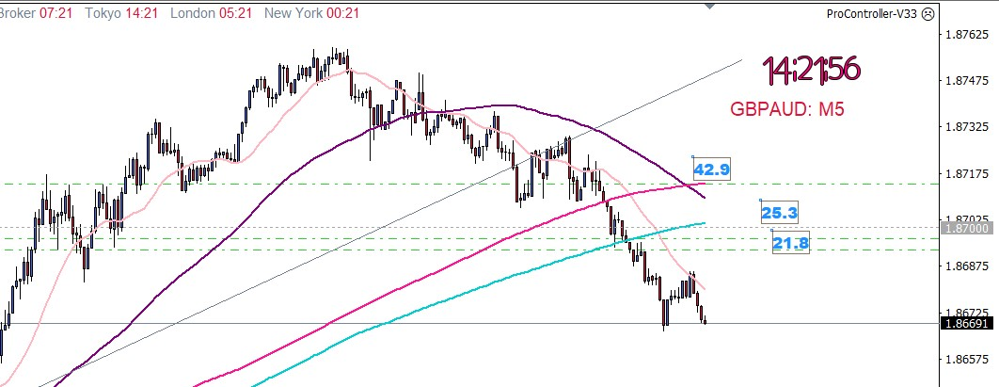
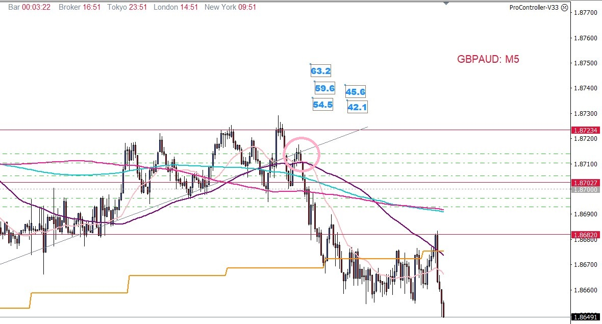
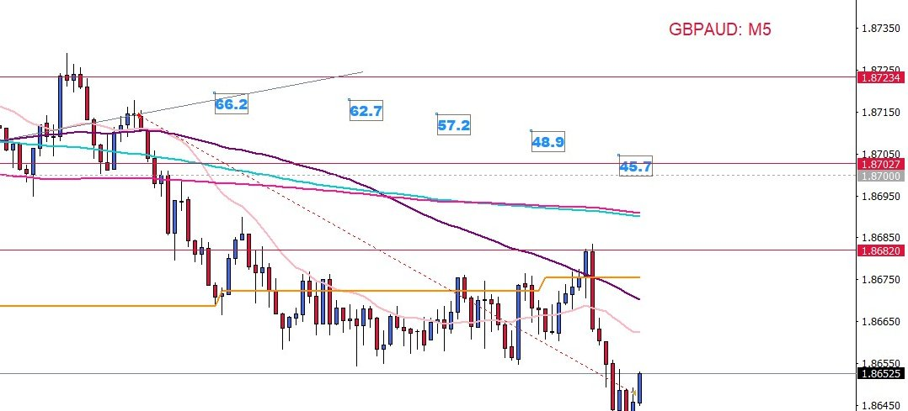
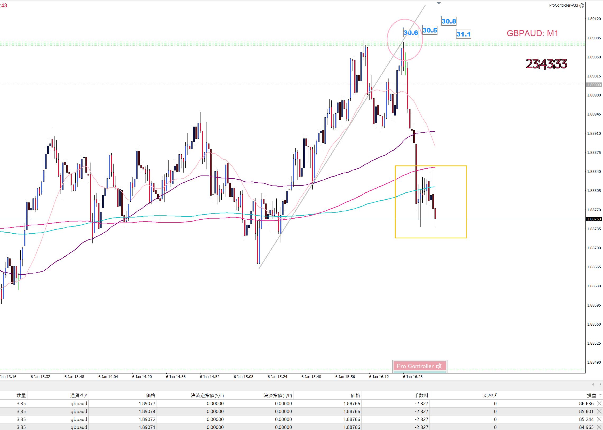
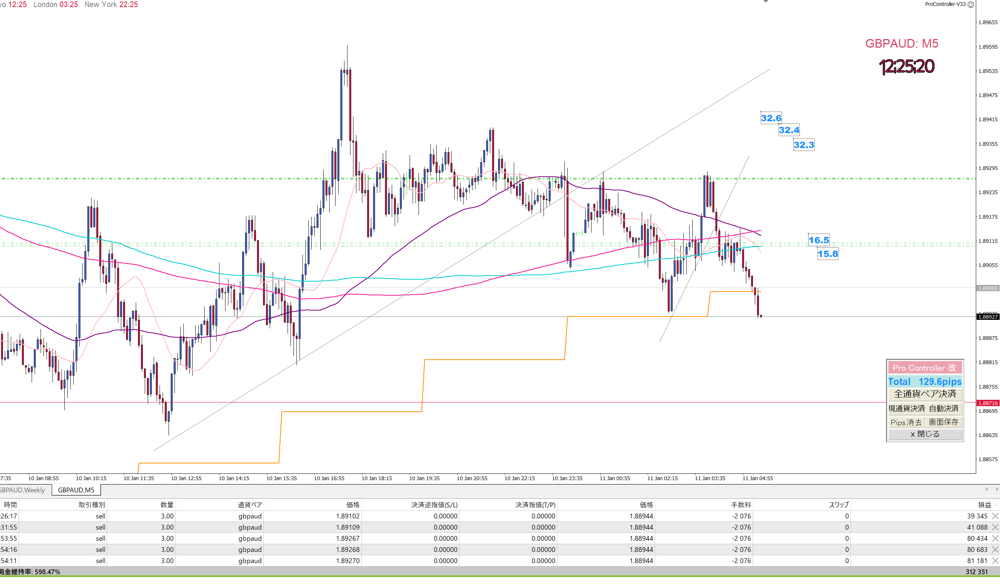
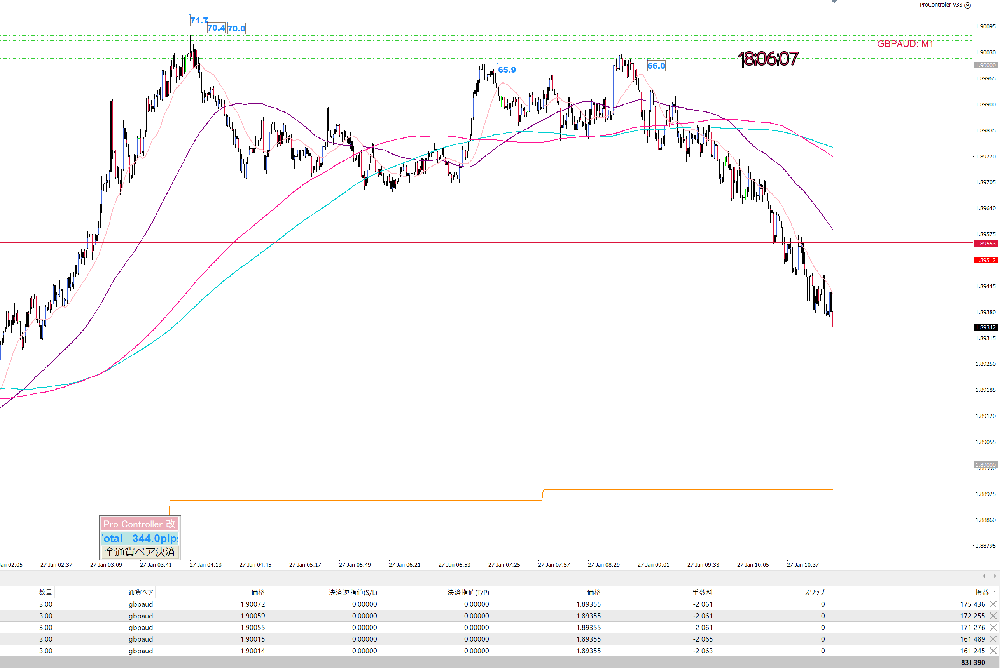

👈👈ギガ速FX_index
👈👈ギガ速FX_index- ページ内のINDEX_test
------------- INDEX_test -------------
빨간 글씨에서 오른쪽은 검은 글씨 ⇒ 나이스! 예제 _CSS에서 a.link-highlight를 사용
xr20220104 ⇒ 20220104 Chart(MT4)

xr20220106a ⇒ xr20220106a Chart(MT4)

xr20220106b ⇒ xr20220106b Chart(MT4)

xr20220107a ⇒ xr20220107a Chart(MT4)

xr20220111a ⇒ xr20220111a Chart(MT4)

xr20220127a ⇒ xr20220127a Chart(MT4)

Hunt7_lecture/Hunt7_lecture-07 ⇒ Hunt7_lecture/Hunt7_lecture-07

MA(이동 평균선)는 중요한 지표로, 트레이딩에서 신뢰할 수 있는 지지 및 저항선을 제공합니다.
이를 통해 실전 트레이딩에서의 성공 가능성을 높일 수 있습니다.